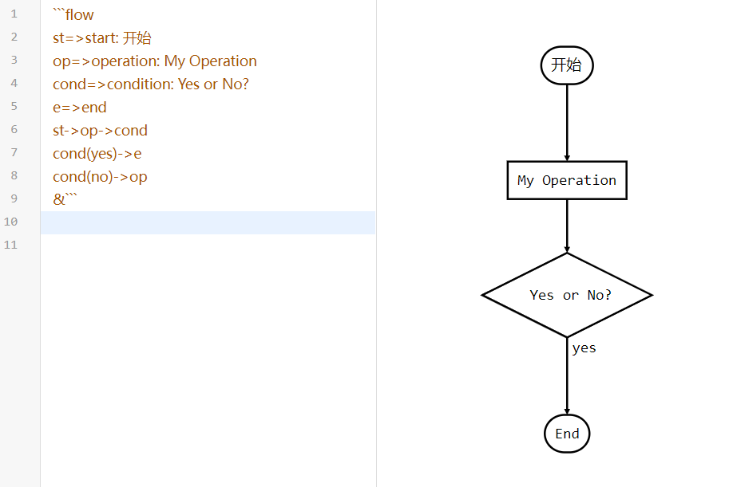

 <!DOCTYPE HTML>
 <html lang="zh-CN">
 <head><meta name="generator" content="Hexo 3.9.0">
   <meta charset="UTF-8">
   
     <title>Markdown语法篇</title>
     <meta name="viewport" content="width=device-width, initial-scale=1, maximum-scale=3, minimum-scale=1">
     
     <meta name="author" content="IceAbyss">
     
     <meta name="description" content="第一篇：Hello World!">
     
     
     
     
     <link rel="alternate" href="/atom.xml" title="Here. There." type="application/atom+xml">
     
     
     <link rel="icon" href="/static/images/icon.ico">
     
     
     <link rel="apple-touch-icon" href="/static/images/icon.ico">
     <link rel="apple-touch-icon-precomposed" href="/static/images/icon.ico">
     
     <link rel="stylesheet" href="/blog_something/css/style.css">
     
 <script type="text/javascript">
 var _hmt = _hmt || [];
 (function() {
   var hm = document.createElement("script");
   hm.src = "//hm.baidu.com/hm.js?3d902de4a19cf2bf179534ffd2dd7b7f";
   var s = document.getElementsByTagName("script")[0]; 
   s.parentNode.insertBefore(hm, s);
 })();
 </script>
 
 </head>
 </html>
   <body>
    <audio autoplay="autoplay" id="audio" loop="loop">
        <source src="Illusionary Daytime.mp3" type="audio/MP3">
    </audio>
     <header>
       <div>
         
             <div id="imglogo">
                 <a href="/"></a>
             </div>
             
             <div id="textlogo">
                 <h1 class="site-name"><a href="/" title="IceAbyss Blog">IceAbyss Blog</a></h1>
                 <h2 class="blog-motto">Markdown语法篇</h2>
             </div>
             <div class="navbar"><a class="navbutton navmobile" href="#" title="菜单">
             </a></div>
             <nav class="animated">
                <ul>
                     
                    <li><a href="/index.html">Home(主页)</a></li>

					<li><a href="/blog.html">Blog(博客)</a></li>

					<!--<li><a href="/tools.html">Relax(娱乐)</a></li>-->

					<li><a href="../../about/index.html">About(关于)</a></li>

                    <li><a href="../../iasearch.html">IASearch(IA搜索页)</a></li>

					<li><a href="../../update.html">UpdateLog(更新日志)</a></li>
                     
                 </ul>
             </nav>			
 </div>
 
     </header>
     <div id="container">
       <div id="main" class="post" itemscope itemprop="blogPost">
     <article itemprop="articleBody"> 
         <header class="article-info clearfix">
   <h1 itemprop="name">
     
     
       <a href="4.html" title="Hello World!" itemprop="url">Markdown语法篇</a>
   </h1>
 
   
   <p class="article-author">By 冰渊(IceAbyss)
     </p>
 
   <p class="article-time">
     
     
     <time datetime="2022-7-14T11:00:01.000Z" itemprop="datePublished">2022-8-8</time>
     
   </p>
 </header>
     <div class="article-content">

    <h2>目录</h2>
    <li>概述</li>
    <li>依赖</li>
    <li>标题</li>
    <li>字体</li>
    <li>引用</li>
    <li>分割线</li>
    <li>图片</li>
    <li>超链接</li>
    <li>列表</li>
    <li>代码</li>
    <li>结语</li>
    


    <h2>概述</h2>
    <p>Markdown是一种纯文本格式的标记语言。通过简单的标记语法，它可以使普通文本内容具有一定的格式。
    
    <p>因简洁、高效、易读、易写，Markdown被大量使用，如Github、Wikipedia、简书等。</p>
    <p>因此Markdown已经是每个人必须所掌握的一项技能了。</p>
    <p>不过没关系，markdown的语法比HTML还简单，简单到令人难以置信。</p>

    
    <h2>依赖</h2>
    <p>markdown文件的扩展名是<code>.md</code>，所以我们只需要将文件的扩展名改为<code>.md</code>，就可以创建出一个markdown文件了。</p>
    <p>那么用什么来写markdown呢，其实直接用记事本或其它的文本编辑器打开就可以直接写了，但是那样不仅不美观而且还不高效，这是最不能忍受的！</p>
    <p>所谓：</p>
    <blockquote>
        工欲善其事，必先利其器
    </blockquote>
    <p>若是有个专门编写markdown的编辑器，那必将使我们事半功倍！</p>
    <p>在这里，我强烈推荐一款专业的markdown编辑器<a href='https://typoraio.cn/'>「Typora」</a>！（这不是打广告:）它真的非常好用，到运用熟悉之后，许多操作不需要自己敲出来，只需要按快捷方式便可直接对文本进行操作√。但是在 Typora 正式发布 1.0 版本的时候，进入了付费时代。不过还好，它的价格并不算太贵，只需要支付89元人民币就可以在3台设备里使用:)</p>
    <p>如果实在不想买也没关系，网上还有在线版的markdown编辑器，如 <a href='https://md.mzr.me/'>MdEditor</a>...等等。虽说功能没有Typora那么全，但像我们这种非盈利用户来说已经完全够用了。</p>
    <p>好了，该准备的咱都准备好了，终于可以来敲markdown了！</p>


    <h2>标题</h2>
    <p>标题是文档中必不可少的一个内容。</p>
    <p>在markdown中标题是有分级的，即含有一级标题、二级标题、三级标题等等。</p>
    <p>我们可以在想要设置为标题的文字前面加<code>#</code>来表示此处为标题。</p>
    <p>一个 # 是一级标题，二个 # 是二级标题，以此类推。</p>
    <p><b>注意：</b>最高为六级标题！！！</p>
    


    <h2>字体</h2>
    <p>一篇文章是否层次分明、有主有次当然和字体有关系了，那么在markdown中是怎么改变字体的样式的呢：
    <li>加粗</li>
    <p>想要突出某些关键词，最好的方法就是给文字加粗了，那么怎么加粗呢？那就是将要加粗的文字左右分别用两个 * 号包起来。（如下图）</p>
    <li>斜体</li>
    <p>斜体就将要倾斜的文字左右分别用一个*号包起来（如下图）</p>
    <li>斜体加粗</li>
    <p>那么若要二者合一就将要倾斜和加粗的文字左右分别用三个*号包起来（如下图）</p>
    <li>删除线</li>
    <p>将要加删除线的文字左右分别用两个~~号包起来（如下图）</p>
    


    <h2>引用</h2>
    <p>那么是否能在markdown里引入一段话呢？答案是肯定的。</p>
    <p>在引用的文字前加<code>></code>即可。引用也可以嵌套，如加两个<code>>></code>，三个<code>>>></code>，以此类推...不过好像也没什么用处 :)</p>
    
    


    <h2>分割线</h2>
    <p>如何将上下两块内容分开呢，答案就是分割线。</p>
    <p>在markdown中三个或者三个以上的 - 或者 * 都可以组成一条分割线。（如下图）</p>
    


    <h2>图片</h2>
    <p>markdown还有比其它文档多的一个功能那就是支持插入图片:)</p>
    <p>插入图片的语法为：</p>
    <pre></pre>
    <p>图片alt就是显示在图片下面的文字，相当于对图片内容的解释。</p>
    <p>图片title是图片的标题，当鼠标移到图片上时显示的内容。title可加可不加（如下图）。</p>
    
    <p>markdown格式追求的是简单、多平台统一。那么图片的存储就是一个问题，需要用图床，提供统一的外链，这样就不用在不同的平台去处理图片的问题了。才能做到书写一次，各处使用。</p>


    <h2>超链接</h2>
    <p>如何在markdown里加入一个网站的超链接呢？它的语法非常简单：</p>
    <pre>[超链接名](超链接地址 "超链接title")</pre>
    <p>title可加可不加（如下图）</p>
    


    <h2>列表</h2>
    <p>列表也是平常必要使用的，列表在markdown中分为3类：无序列表、有序列表和嵌套列表。</p>
    <p><b>无序列表</b> -> 语法：无序列表用 - + * 任何一种都可以</p>
    <p><b>有序列表</b> -> 语法：数字加点</p>
    <p><b>嵌套列表</b> -> 语法：上一级和下一级之间敲三个空格即可</p>
    


    <h2>表格</h2>
    <p>没错，在markdown中还能写表格！这是连我也没想到的。</p>
    <p>语法：</p>
    <pre>
        表头|表头|表头
        ---|:--:|---:
        内容|内容|内容
        内容|内容|内容
    </pre>
    <p>第二行分割表头和内容。有一个就行，为了对齐，多加了几个</p>
    <p>文字默认居左</p>
    <p>两边加：表示文字居中||||右边加：表示文字居右</p>
    


    <h2>代码</h2>
    <p>代码的编写是每个优雅的开发者所必备的，在markdown中代码分为两种：单行代码和代码块。</p>
    <p><b>单行代码</b> -> 语法：代码之间分别用一个反引号包起来</p>
    <p><b>代码块</b> -> 语法：代码之间分别用三个反引号包起来，且两边的反引号单独占一行，可在第一次三个反引号后面指定代码语言</p>
    


    <h2>流程图</h2>
    <p>emm，吓到我了，没想到markdown还支持流程图，流程图我还不太熟悉，所以就直接从网上找了一个：</p>
    


    <h2>结语</h2>
    <p>好了，markdown的基本语法大概就是这些了，是不是特别简单 :)</p>


    <p>🎵本期背景音乐：Illusionary Daytime</p>
    <p>感谢观看，我是冰渊(IceAbyss)，我们下期再见:)👋👋🏻👋🏼👋🏽👋🏾👋🏿</p>
    <p>若有错漏或者维权的地方请联系我->邮箱📧iceabyss545@gmail.com</p>
 
 
 
 
 
 
 
 
 
 <!--
     <blockquote>
     <p>我有一个游戏梦，Canvas 做游戏应该也很好玩吧。</p>
     </blockquote>
 -->
 
 <!--buy me a coffee
     </div>
     
     <p style="text-align: center;margin-top: 10px;margin-bottom: 10px;">码生艰难，写文不易，给我家猪囤点猫粮了喵~</p>
     <div class="article-content">
 -->
 
 
     </div>
     <div class="author-right">
           <p>作者：冰渊(IceAbyss)</p>
           <p>出处：<a href="https://iceabyss.github.io">https://iceabyss.github.io</a></p>
           <p>本文版权归作者所有，欢迎转载，但未经作者同意必须保留此段声明，且在文章页面明显位置给出原文连接，否则保留追究法律责任的权利。</p>
     </div>
         <footer class="article-footer clearfix">

            
            <div class="article-tags">
   
                <span></span> <a href="/tags/技术分享/index.html">技术分享</a>
                </div>
 
 
 
 <div class="article-share" id="share">
 
   
 <!-- JiaThis Button BEGIN -->
 <div class="jiathis_style_24x24">
     <a class="jiathis_button_qzone"></a>
     <a class="jiathis_button_tsina"></a>
     <a class="jiathis_button_tqq"></a>
     <a class="jiathis_button_weixin"></a>
     <a class="jiathis_button_renren"></a>
     <a href="http://www.jiathis.com/share?uid=2134021" class="jiathis jiathis_txt jtico jtico_jiathis" target="_blank"></a>
 </div>
 <script type="text/javascript">
 var jiathis_config = {data_track_clickback:'true'};
 </script>
 <script type="text/javascript" src="http://v3.jiathis.com/code_mini/jia.js?uid=2134021" charset="utf-8"></script>
 <!-- JiaThis Button END -->   
 
 
 </div>
 </footer>   	       
     </article>
     
 <nav class="article-nav clearfix">
  
 
 <div class="next">
 <a href="/blog/3/3.html"  title="Blog(博客)">
  <strong>NEXT:</strong><br/> 
  <span>网络是如何运作的？
 </span>
 </a>
 </div>
 
 </nav>
 
     <!-- 如果不是首页且没使用 `comments: false` 关闭评论，则尝试加载评论 -->
 
     <!-- 配置中启用多说时，导入相应代码 -->
     
 
 
 </div>  
       <div class="openaside"><a class="navbutton" href="#" title="显示侧边栏"></a></div>
 <!--
   <div id="toc" class="toc-aside">
   <strong class="toc-title">文章目录</strong>
   <ol class="toc"><li class="toc-item toc-level-1"><a class="toc-link" href="#Canvas-性能优化"><span class="toc-number">1.</span> <span class="toc-text">Canvas 性能优化</span></a><ol class="toc-child"><li class="toc-item toc-level-2"><a class="toc-link" href="#Canvas-上下文切换"><span class="toc-number">1.1.</span> <span class="toc-text">Canvas 上下文切换</span></a></li><li class="toc-item toc-level-2"><a class="toc-link" href="#Canvas-拆分"><span class="toc-number">1.2.</span> <span class="toc-text">Canvas 拆分</span></a><ol class="toc-child"><li class="toc-item toc-level-3"><a class="toc-link" href="#绘制范围的拆分"><span class="toc-number">1.2.1.</span> <span class="toc-text">绘制范围的拆分</span></a></li><li class="toc-item toc-level-3"><a class="toc-link" href="#堆叠层次的拆分"><span class="toc-number">1.2.2.</span> <span class="toc-text">堆叠层次的拆分</span></a></li><li class="toc-item toc-level-3"><a class="toc-link" href="#Canvas-拆分的开销"><span class="toc-number">1.2.3.</span> <span class="toc-text">Canvas 拆分的开销</span></a></li></ol></li><li class="toc-item toc-level-2"><a class="toc-link" href="#离屏渲染"><span class="toc-number">1.3.</span> <span class="toc-text">离屏渲染</span></a><ol class="toc-child"><li class="toc-item toc-level-3"><a class="toc-link" href="#各种离屏渲染场景"><span class="toc-number">1.3.1.</span> <span class="toc-text">各种离屏渲染场景</span></a></li><li class="toc-item toc-level-3"><a class="toc-link" href="#OffscreenCanvas-API-能力"><span class="toc-number">1.3.2.</span> <span class="toc-text">OffscreenCanvas API 能力</span></a></li></ol></li><li class="toc-item toc-level-2"><a class="toc-link" href="#其他-Canvas-优化方式"><span class="toc-number">1.4.</span> <span class="toc-text">其他 Canvas 优化方式</span></a><ol class="toc-child"><li class="toc-item toc-level-3"><a class="toc-link" href="#增量渲染"><span class="toc-number">1.4.1.</span> <span class="toc-text">增量渲染</span></a></li></ol></li></ol></li><li class="toc-item toc-level-1"><a class="toc-link" href="#结束语"><span class="toc-number">2.</span> <span class="toc-text">结束语</span></a></li></ol>
   </div>
 -->

 
 
 
 <div id="asidepart">
 <div class="closeaside"><a class="closebutton" href="#" title="隐藏侧边栏"></a></div>
 <aside class="clearfix">
 
       
    <div class="archiveslist">
        <p class="asidetitle">最近文章</p>
            <ul class="archive-list">
                

                <li class="archive-list-item">
                    <a class="archive-list-link" href="/blog/4/4.html" title="Markdown语法篇">Markdown语法篇
                    </a>
                </li>

                    
                <li class="archive-list-item">
                    <a class="archive-list-link" href="/blog/3/3.html" title="网络是如何运作的？">网络是如何运作的？</a>
                </li>
                
            
                    
                <li class="archive-list-item">
                    <a class="archive-list-link" href="/blog/2/2.html" title="2D图片变3D？！">2D图片变3D？！</a>
                </li>
                
            
                    
                <li class="archive-list-item">
                    <a class="archive-list-link" href="/blog/1/1.html" title="Hello World!">Hello World!</a>
                </li>

				
               
 <br>
 <div class="archiveslist">
	<p class="asidetitle"><a href="/tags/index.html">标签</a></p>
	<ul class="archive-list">
		<li class="archive-list-item">
			<a href="/tags/聊天灌水/index.html">聊天灌水</a>
			<a href="/tags/技术分享/index.html">技术分享</a>
			<a href="/tags/好文翻译/index.html">好文翻译</a>

		</li>
	</ul>
</div>


                 
             
 <!--				
                 <li class="archive-list-item">
                     <a class="archive-list-link" href="/2022/04/09/front-end-performance-startup/" title="前端性能优化--加载流程篇">前端性能优化--加载流程篇...</a>
                 </li>
                 
             
                     
                 <li class="archive-list-item">
                     <a class="archive-list-link" href="/2022/03/06/front-end-performance-optimization/" title="前端性能优化--归纳篇">前端性能优化--归纳篇</a>
                 </li>
                 
             
                     
                 <li class="archive-list-item">
                     <a class="archive-list-link" href="/2022/02/27/about-updating/" title="前端这几年--答辩晋级这件事">前端这几年--答辩晋级这件事...</a>
                 </li>
                 
             
                     
                 <li class="archive-list-item">
                     <a class="archive-list-link" href="/2022/02/07/front-end-engineering/" title="我所理解的前端工程化">我所理解的前端工程化</a>
                 </li>
                 
             
                     
                 <li class="archive-list-item">
                     <a class="archive-list-link" href="/2022/01/09/angular-design-ivy-6-detect-change/" title="Angular框架解读--Ivy编译器之变更检测">Angular框架解读--Ivy编译...</a>
                 </li>
                 
             
                     
                 <li class="archive-list-item">
                     <a class="archive-list-link" href="/2021/12/25/my-2021/" title="2021 年度总结--冲啊打工人">2021 年度总结--冲啊打工人...</a>
                 </li>
                 
             
                     
                 <li class="archive-list-item">
                     <a class="archive-list-link" href="/2021/12/12/about-front-end-14/" title="前端这几年--14.技术深度是伪命题吗">前端这几年--14.技术深度是伪命题...</a>
                 </li>
                 
 -->
             
                 
             
                 
             
                 
             
                 
             
                 
             
                 
             
                 
             
                 
             
                 
             
                 
             
                 
             
                 
             
                 
             
                 
             
                 
             
                 
             
                 
             
                 
             
                 
             
                 
             
                 
             
                 
             
                 
             
                 
             
                 
             
                 
             
                 
             
                 
             
                 
             
                 
             
                 
             
                 
             
                 
             
                 
             
                 
             
                 
             
                 
             
                 
             
                 
             
                 
             
                 
             
                 
             
                 
             
                 
             
                 
             
                 
             
                 
             
                 
             
                 
             
                 
             
                 
             
                 
             
                 
             
                 
             
                 
             
                 
             
                 
             
                 
             
                 
             
                 
             
                 
             
                 
             
                 
             
                 
             
                 
             
                 
             
                 
             
                 
             
                 
             
                 
             
                 
             
                 
             
                 
             
                 
             
                 
             
                 
             
                 
             
                 
             
                 
             
                 
             
                 
             
                 
             
                 
             
                 
             
                 
             
                 
             
                 
             
                 
             
                 
             
                 
             
                 
             
                 
             
                 
             
                 
             
                 
             
                 
             
                 
             
                 
             
                 
             
                 
             
                 
             
                 
             
                 
             
                 
             
                 
             
                 
             
                 
             
                 
             
                 
             
                 
             
                 
             
                 
             
                 
             
                 
             
                 
             
                 
             
                 
             
                 
             
                 
             
                 
             
                 
             
                 
             
                 
             
                 
             
                 
             
                 
             
                 
             
                 
             
                 
             
                 
             
                 
             
                 
             
                 
             
                 
             
                 
             
                 
             
                 
             
                 
             
                 
             
                 
             
                 
             
                 
             
                 
             
                 
             
                 
             
                 
             
                 
             
                 
             
                 
             
                 
             
                 
             
                 
             
                 
             
                 
             
                 
             
                 
             
                 
             
                 
             
                 
             
                 
             
                 
             
                 
             
                 
             
                 
             
                 
             
                 
             
                 
             
                 
             
                 
             
                 
             
                 
             
                 
             
                 
             
                 
             
                 
             
                 
             
                 
             
                 
             
                 
             
                 
             
                 
             
                 
             
                 
             
                 
             
                 
             
                 
             
                 
             
                 
             
                 
             
                 
             
                 
             
                 
             
                 
             
                 
             
                 
             
                 
             
                 
             
                 
             
                 
             
                 
             
                 
             
                 
             
                 
             
                 
             
                 
             
                 
             
                 
             
                 
             
                 
             
                 
             
                 
             
                 
             
                 
             
                 
             
                 
             
                 
             
                 
             
                 
             
                 
             
                 
             
                 
             
                 
             
                 
             
                 
             
                 
             
                 
             
                 
             
                 
             
                 
             
                 
             
                 
             
                 
             
                 
             
                 
             
                 
             
                 
             
                 
             
                 
             
                 
             
                 
             
                 
             
                 
             
                 
             
                 
             
                 
             
                 
             
                 
             
                 
             
                 
             
                 
             
                 
             
                 
             
                 
             
                 
             
                 
             
                 
             
                 
             
                 
             
                 
             
                 
             
                 
             
                 
             
                 
             
                 
             
                 
             
                 
             
                 
             
                 
             
                 
             
                 
             
                 
             
                 
             
                 
             
                 
             
                 
             
                 
             
                 
             
                 
             
                 
             
                 
             
                 
             
                 
             
                 
             
                 
             
                 
             
                 
             
                 
             
                 
             
                 
             
                 
             
                 
             
                 
             
                 
             
                 
             
                 
             
                 
             
                 
             
                 
             
                 
             
                 
             
                 
             
                 
             
                 
             
                 
             
                 
             
                 
             
                 
             
                 
             
                 
             
                 
             
                 
             
                 
             
                 
             
                 
             
                 
             
             </ul>
     </div>
 
 
 <!--
   <div class="archiveslist">
     <p class="asidetitle"><a href="/archives">归档</a></p>
       <ul class="archive-list"><li class="archive-list-item"><a class="archive-list-link" href="/archives/2022/07/">七月 2022</a><span class="archive-list-count">1</span></li><li class="archive-list-item"><a class="archive-list-link" href="/archives/2022/06/">六月 2022</a><span class="archive-list-count">1</span></li><li class="archive-list-item"><a class="archive-list-link" href="/archives/2022/05/">五月 2022</a><span class="archive-list-count">1</span></li><li class="archive-list-item"><a class="archive-list-link" href="/archives/2022/04/">四月 2022</a><span class="archive-list-count">1</span></li><li class="archive-list-item"><a class="archive-list-link" href="/archives/2022/03/">三月 2022</a><span class="archive-list-count">1</span></li><li class="archive-list-item"><a class="archive-list-link" href="/archives/2022/02/">二月 2022</a><span class="archive-list-count">2</span></li><li class="archive-list-item"><a class="archive-list-link" href="/archives/2022/01/">一月 2022</a><span class="archive-list-count">1</span></li><li class="archive-list-item"><a class="archive-list-link" href="/archives/2021/12/">十二月 2021</a><span class="archive-list-count">3</span></li><li class="archive-list-item"><a class="archive-list-link" href="/archives/2021/11/">十一月 2021</a><span class="archive-list-count">4</span></li><li class="archive-list-item"><a class="archive-list-link" href="/archives/2021/10/">十月 2021</a><span class="archive-list-count">3</span></li><li class="archive-list-item"><a class="archive-list-link" href="/archives/2021/09/">九月 2021</a><span class="archive-list-count">1</span></li><li class="archive-list-item"><a class="archive-list-link" href="/archives/2021/08/">八月 2021</a><span class="archive-list-count">1</span></li><li class="archive-list-item"><a class="archive-list-link" href="/archives/2021/07/">七月 2021</a><span class="archive-list-count">2</span></li><li class="archive-list-item"><a class="archive-list-link" href="/archives/2021/06/">六月 2021</a><span class="archive-list-count">2</span></li><li class="archive-list-item"><a class="archive-list-link" href="/archives/2021/05/">五月 2021</a><span class="archive-list-count">3</span></li><li class="archive-list-item"><a class="archive-list-link" href="/archives/2021/04/">四月 2021</a><span class="archive-list-count">1</span></li><li class="archive-list-item"><a class="archive-list-link" href="/archives/2021/03/">三月 2021</a><span class="archive-list-count">2</span></li><li class="archive-list-item"><a class="archive-list-link" href="/archives/2021/02/">二月 2021</a><span class="archive-list-count">1</span></li><li class="archive-list-item"><a class="archive-list-link" href="/archives/2021/01/">一月 2021</a><span class="archive-list-count">2</span></li><li class="archive-list-item"><a class="archive-list-link" href="/archives/2020/11/">十一月 2020</a><span class="archive-list-count">1</span></li><li class="archive-list-item"><a class="archive-list-link" href="/archives/2020/10/">十月 2020</a><span class="archive-list-count">2</span></li><li class="archive-list-item"><a class="archive-list-link" href="/archives/2020/08/">八月 2020</a><span class="archive-list-count">5</span></li><li class="archive-list-item"><a class="archive-list-link" href="/archives/2020/07/">七月 2020</a><span class="archive-list-count">3</span></li><li class="archive-list-item"><a class="archive-list-link" href="/archives/2020/06/">六月 2020</a><span class="archive-list-count">3</span></li><li class="archive-list-item"><a class="archive-list-link" href="/archives/2020/04/">四月 2020</a><span class="archive-list-count">4</span></li><li class="archive-list-item"><a class="archive-list-link" href="/archives/2020/03/">三月 2020</a><span class="archive-list-count">7</span></li><li class="archive-list-item"><a class="archive-list-link" href="/archives/2020/02/">二月 2020</a><span class="archive-list-count">2</span></li><li class="archive-list-item"><a class="archive-list-link" href="/archives/2019/12/">十二月 2019</a><span class="archive-list-count">3</span></li><li class="archive-list-item"><a class="archive-list-link" href="/archives/2019/11/">十一月 2019</a><span class="archive-list-count">4</span></li><li class="archive-list-item"><a class="archive-list-link" href="/archives/2019/10/">十月 2019</a><span class="archive-list-count">2</span></li><li class="archive-list-item"><a class="archive-list-link" href="/archives/2019/09/">九月 2019</a><span class="archive-list-count">1</span></li><li class="archive-list-item"><a class="archive-list-link" href="/archives/2019/08/">八月 2019</a><span class="archive-list-count">1</span></li><li class="archive-list-item"><a class="archive-list-link" href="/archives/2019/07/">七月 2019</a><span class="archive-list-count">4</span></li><li class="archive-list-item"><a class="archive-list-link" href="/archives/2019/06/">六月 2019</a><span class="archive-list-count">3</span></li><li class="archive-list-item"><a class="archive-list-link" href="/archives/2019/05/">五月 2019</a><span class="archive-list-count">1</span></li><li class="archive-list-item"><a class="archive-list-link" href="/archives/2019/04/">四月 2019</a><span class="archive-list-count">2</span></li><li class="archive-list-item"><a class="archive-list-link" href="/archives/2019/03/">三月 2019</a><span class="archive-list-count">2</span></li><li class="archive-list-item"><a class="archive-list-link" href="/archives/2019/02/">二月 2019</a><span class="archive-list-count">2</span></li><li class="archive-list-item"><a class="archive-list-link" href="/archives/2019/01/">一月 2019</a><span class="archive-list-count">3</span></li><li class="archive-list-item"><a class="archive-list-link" href="/archives/2018/12/">十二月 2018</a><span class="archive-list-count">4</span></li><li class="archive-list-item"><a class="archive-list-link" href="/archives/2018/11/">十一月 2018</a><span class="archive-list-count">4</span></li><li class="archive-list-item"><a class="archive-list-link" href="/archives/2018/10/">十月 2018</a><span class="archive-list-count">1</span></li><li class="archive-list-item"><a class="archive-list-link" href="/archives/2018/09/">九月 2018</a><span class="archive-list-count">3</span></li><li class="archive-list-item"><a class="archive-list-link" href="/archives/2018/08/">八月 2018</a><span class="archive-list-count">3</span></li><li class="archive-list-item"><a class="archive-list-link" href="/archives/2018/07/">七月 2018</a><span class="archive-list-count">3</span></li><li class="archive-list-item"><a class="archive-list-link" href="/archives/2018/06/">六月 2018</a><span class="archive-list-count">3</span></li><li class="archive-list-item"><a class="archive-list-link" href="/archives/2018/05/">五月 2018</a><span class="archive-list-count">5</span></li><li class="archive-list-item"><a class="archive-list-link" href="/archives/2018/04/">四月 2018</a><span class="archive-list-count">4</span></li><li class="archive-list-item"><a class="archive-list-link" href="/archives/2018/03/">三月 2018</a><span class="archive-list-count">7</span></li><li class="archive-list-item"><a class="archive-list-link" href="/archives/2018/02/">二月 2018</a><span class="archive-list-count">4</span></li><li class="archive-list-item"><a class="archive-list-link" href="/archives/2018/01/">一月 2018</a><span class="archive-list-count">9</span></li><li class="archive-list-item"><a class="archive-list-link" href="/archives/2017/12/">十二月 2017</a><span class="archive-list-count">5</span></li><li class="archive-list-item"><a class="archive-list-link" href="/archives/2017/11/">十一月 2017</a><span class="archive-list-count">3</span></li><li class="archive-list-item"><a class="archive-list-link" href="/archives/2017/10/">十月 2017</a><span class="archive-list-count">5</span></li><li class="archive-list-item"><a class="archive-list-link" href="/archives/2017/09/">九月 2017</a><span class="archive-list-count">6</span></li><li class="archive-list-item"><a class="archive-list-link" href="/archives/2017/08/">八月 2017</a><span class="archive-list-count">11</span></li><li class="archive-list-item"><a class="archive-list-link" href="/archives/2017/07/">七月 2017</a><span class="archive-list-count">9</span></li><li class="archive-list-item"><a class="archive-list-link" href="/archives/2017/06/">六月 2017</a><span class="archive-list-count">10</span></li><li class="archive-list-item"><a class="archive-list-link" href="/archives/2017/05/">五月 2017</a><span class="archive-list-count">15</span></li><li class="archive-list-item"><a class="archive-list-link" href="/archives/2017/04/">四月 2017</a><span class="archive-list-count">7</span></li><li class="archive-list-item"><a class="archive-list-link" href="/archives/2017/03/">三月 2017</a><span class="archive-list-count">10</span></li><li class="archive-list-item"><a class="archive-list-link" href="/archives/2017/02/">二月 2017</a><span class="archive-list-count">41</span></li><li class="archive-list-item"><a class="archive-list-link" href="/archives/2017/01/">一月 2017</a><span class="archive-list-count">6</span></li><li class="archive-list-item"><a class="archive-list-link" href="/archives/2016/12/">十二月 2016</a><span class="archive-list-count">7</span></li><li class="archive-list-item"><a class="archive-list-link" href="/archives/2016/11/">十一月 2016</a><span class="archive-list-count">9</span></li><li class="archive-list-item"><a class="archive-list-link" href="/archives/2016/10/">十月 2016</a><span class="archive-list-count">5</span></li><li class="archive-list-item"><a class="archive-list-link" href="/archives/2016/09/">九月 2016</a><span class="archive-list-count">7</span></li><li class="archive-list-item"><a class="archive-list-link" href="/archives/2016/08/">八月 2016</a><span class="archive-list-count">9</span></li><li class="archive-list-item"><a class="archive-list-link" href="/archives/2016/07/">七月 2016</a><span class="archive-list-count">14</span></li><li class="archive-list-item"><a class="archive-list-link" href="/archives/2016/06/">六月 2016</a><span class="archive-list-count">9</span></li></ul>
   </div>
 -->
 
 <!--
 <div class="archiveslist">
     <p class="asidetitle"><a href="/categories">分类</a></p>
         <ul class="archive-list">
         
             <li class="archive-list-item">
                 <a class="archive-list-link" href="/categories/Angular源码/" title="Angular源码">Angular源码<sup>16</sup></a>
             </li>
         
             <li class="archive-list-item">
                 <a class="archive-list-link" href="/categories/CSS炒饭/" title="CSS炒饭">CSS炒饭<sup>3</sup></a>
             </li>
         
             <li class="archive-list-item">
                 <a class="archive-list-link" href="/categories/D3小馒头/" title="D3小馒头">D3小馒头<sup>8</sup></a>
             </li>
         
             <li class="archive-list-item">
                 <a class="archive-list-link" href="/categories/angular2火锅/" title="angular2火锅">angular2火锅<sup>25</sup></a>
             </li>
         
             <li class="archive-list-item">
                 <a class="archive-list-link" href="/categories/angular混搭/" title="angular混搭">angular混搭<sup>33</sup></a>
             </li>
         
             <li class="archive-list-item">
                 <a class="archive-list-link" href="/categories/box2djs方糖/" title="box2djs方糖">box2djs方糖<sup>34</sup></a>
             </li>
         
             <li class="archive-list-item">
                 <a class="archive-list-link" href="/categories/cyclejs哈根达斯/" title="cyclejs哈根达斯">cyclejs哈根达斯<sup>8</sup></a>
             </li>
         
             <li class="archive-list-item">
                 <a class="archive-list-link" href="/categories/jQuery杂烩/" title="jQuery杂烩">jQuery杂烩<sup>3</sup></a>
             </li>
         
             <li class="archive-list-item">
                 <a class="archive-list-link" href="/categories/js什锦/" title="js什锦">js什锦<sup>27</sup></a>
             </li>
         
             <li class="archive-list-item">
                 <a class="archive-list-link" href="/categories/react沙拉/" title="react沙拉">react沙拉<sup>16</sup></a>
             </li>
         
             <li class="archive-list-item">
                 <a class="archive-list-link" href="/categories/three-js奶茶/" title="three.js奶茶">three.js奶茶<sup>5</sup></a>
             </li>
         
             <li class="archive-list-item">
                 <a class="archive-list-link" href="/categories/vue八宝粥/" title="vue八宝粥">vue八宝粥<sup>30</sup></a>
             </li>
         
             <li class="archive-list-item">
                 <a class="archive-list-link" href="/categories/webpack宾治/" title="webpack宾治">webpack宾治<sup>9</sup></a>
             </li>
         
             <li class="archive-list-item">
                 <a class="archive-list-link" href="/categories/web乱炖/" title="web乱炖">web乱炖<sup>2</sup></a>
             </li>
         
             <li class="archive-list-item">
                 <a class="archive-list-link" href="/categories/前端满汉全席/" title="前端满汉全席">前端满汉全席<sup>8</sup></a>
             </li>
         
             <li class="archive-list-item">
                 <a class="archive-list-link" href="/categories/前端解决方案/" title="前端解决方案">前端解决方案<sup>19</sup></a>
             </li>
         
             <li class="archive-list-item">
                 <a class="archive-list-link" href="/categories/喵/" title="喵">喵<sup>2</sup></a>
             </li>
         
             <li class="archive-list-item">
                 <a class="archive-list-link" href="/categories/小程序双皮奶/" title="小程序双皮奶">小程序双皮奶<sup>33</sup></a>
             </li>
         
             <li class="archive-list-item">
                 <a class="archive-list-link" href="/categories/工作这杯茶/" title="工作这杯茶">工作这杯茶<sup>26</sup></a>
             </li>
         
             <li class="archive-list-item">
                 <a class="archive-list-link" href="/categories/应用巧克力盒/" title="应用巧克力盒">应用巧克力盒<sup>2</sup></a>
             </li>
         
             <li class="archive-list-item">
                 <a class="archive-list-link" href="/categories/思想棉花糖/" title="思想棉花糖">思想棉花糖<sup>8</sup></a>
             </li>
         
             <li class="archive-list-item">
                 <a class="archive-list-link" href="/categories/柴米油盐工具集/" title="柴米油盐工具集">柴米油盐工具集<sup>1</sup></a>
             </li>
         
             <li class="archive-list-item">
                 <a class="archive-list-link" href="/categories/自动化甜筒/" title="自动化甜筒">自动化甜筒<sup>1</sup></a>
             </li>
         
             <li class="archive-list-item">
                 <a class="archive-list-link" href="/categories/非前端钙片/" title="非前端钙片">非前端钙片<sup>7</sup></a>
             </li>
         
         </ul>
 </div>
 
 -->
   
 
 
 
 
 <!--标签
 <div class="archiveslist">
     <p class="asidetitle">标签</p>
         <ul class="archive-list">
         
             <li class="archive-list-item">
                 <a class="archive-list-link" href="/tags/分享/" title="分享">分享<sup>49</sup></a>
             </li>
         
             <li class="archive-list-item">
                 <a class="archive-list-link" href="/tags/功能设计/" title="功能设计">功能设计<sup>16</sup></a>
             </li>
         
             <li class="archive-list-item">
                 <a class="archive-list-link" href="/tags/原创部件/" title="原创部件">原创部件<sup>1</sup></a>
             </li>
         
             <li class="archive-list-item">
                 <a class="archive-list-link" href="/tags/心态/" title="心态">心态<sup>22</sup></a>
             </li>
         
             <li class="archive-list-item">
                 <a class="archive-list-link" href="/tags/性能优化/" title="性能优化">性能优化<sup>5</sup></a>
             </li>
         
             <li class="archive-list-item">
                 <a class="archive-list-link" href="/tags/教程/" title="教程">教程<sup>80</sup></a>
             </li>
         
             <li class="archive-list-item">
                 <a class="archive-list-link" href="/tags/晒猫/" title="晒猫">晒猫<sup>2</sup></a>
             </li>
         
             <li class="archive-list-item">
                 <a class="archive-list-link" href="/tags/笔记/" title="笔记">笔记<sup>121</sup></a>
             </li>
         
             <li class="archive-list-item">
                 <a class="archive-list-link" href="/tags/算法/" title="算法">算法<sup>9</sup></a>
             </li>
         
             <li class="archive-list-item">
                 <a class="archive-list-link" href="/tags/自制插件/" title="自制插件">自制插件<sup>2</sup></a>
             </li>
         
             <li class="archive-list-item">
                 <a class="archive-list-link" href="/tags/逻辑实现/" title="逻辑实现">逻辑实现<sup>19</sup></a>
             </li>
         
         </ul>
 </div>
 -->
 
     <div class="archiveslist">
     <p class="asidetitle"><a href="/archives">about</a></p>
       <ul class="archive-list">
           <li class="archive-list-item">
               <a>iceabyss545@gmail.com</a>
               <a href="https://github.com/ice-abyss">github.com/ice-abyss</a>
           </li>
       </ul>
   </div>
 
   <div class="rsspart">
     <a href="https://github.com/ice-abyss" target="_blank" title="rss">Github follow me</a>
 </div>
 
 </aside>
 </div>
     </div>
     <footer><div id="footer" >
     
     <section class="info">
         <p> 即使梦想再小，却很伟大 ^_^ </p>
     </section>
      
         <p class="copyright">Powered by <a href="https://github.com/ice-abyss" target="_blank" title="hexo">冰渊(IceAbyss)</a> © 2022 
         
         <a href="https://github.com/ice-abyss" target="_blank" title="IceAbyss">冰渊(IceAbyss)</a>
         
         </p>
 </div>
 </footer>
     <script src="/blog_something/js/jquery-2.1.0.min.js"></script>
 <script type="text/javascript">
 $(document).ready(function(){ 
   $('.navbar').click(function(){
     $('header nav').toggleClass('shownav');
   });
   var myWidth = 0;
   function getSize(){
     if( typeof( window.innerWidth ) == 'number' ) {
       myWidth = window.innerWidth;
     } else if( document.documentElement && document.documentElement.clientWidth) {
       myWidth = document.documentElement.clientWidth;
     };
   };
   var m = $('#main'),
       a = $('#asidepart'),
       c = $('.closeaside'),
       o = $('.openaside');
   $(window).resize(function(){
     getSize(); 
     if (myWidth >= 1024) {
       $('header nav').removeClass('shownav');
     }else
     {
       m.removeClass('moveMain');
       a.css('display', 'block').removeClass('fadeOut');
       o.css('display', 'none');
       
       $('#toc.toc-aside').css('display', 'none');
         
     }
   });
   c.click(function(){
     a.addClass('fadeOut').css('display', 'none');
     o.css('display', 'block').addClass('fadeIn');
     m.addClass('moveMain');
   });
   o.click(function(){
     o.css('display', 'none').removeClass('beforeFadeIn');
     a.css('display', 'block').removeClass('fadeOut').addClass('fadeIn');      
     m.removeClass('moveMain');
   });
   $(window).scroll(function(){
     o.css("top",Math.max(80,260-$(this).scrollTop()));
   });
 });
 </script>
 
 <script type="text/javascript">
 $(document).ready(function(){ 
   var ai = $('.article-content>iframe'),
       ae = $('.article-content>embed'),
       t  = $('#toc'),
       h  = $('article h2')
       ah = $('article h2'),
       ta = $('#toc.toc-aside'),
       o  = $('.openaside'),
       c  = $('.closeaside');
   if(ai.length>0){
     ai.wrap('<div class="video-container" />');
   };
   if(ae.length>0){
    ae.wrap('<div class="video-container" />');
   };
   if(ah.length==0){
     t.css('display','none');
   }else{
     c.click(function(){
       ta.css('display', 'block').addClass('fadeIn');
     });
     o.click(function(){
       ta.css('display', 'none');
     });
     $(window).scroll(function(){
       ta.css("top",Math.max(140,320-$(this).scrollTop()));
     });
   };
 });
 </script>
 
 
 
 
 
 
 
   </body>
 </html>
 